GSBPM version v5.2
Generic Statistical Business Process Model Version 5.2 (May 2025)
About this document : This document provides a description of the GSBPM and how it relates to other key models for statistical modernisation.
This work is licensed under the Creative Commons Attribution 4.0 International License. If you re-use all or part of this work, please attribute it to the United Nations Economic Commission for Europe (UNECE), on behalf of the international statistical community.
Download Word and PDF version: UNECE website
For more information on GSBPM: GSBPM wiki
Feedback on GSBPM v5.2: Github page
I. Introduction
1. The Generic Statistical Business Process Model (GSBPM) describes and defines a set of activities involved in the business processes needed to produce official statistics. It provides a standard framework and harmonised terminology to help statistical organisations to modernise their statistical production processes, as well as to share methods and components. The GSBPM can also be used for integrating data and metadata standards, as a template for process documentation, for harmonising statistical computing infrastructures, and to provide a framework for process quality assessment and improvement. These and other purposes for which the GSBPM can be used are elaborated further in Sections II and VII. This version of the GSBPM is aligned with version 2.0 of the Generic Statistical Information Model (GSIM) and version 1.2 of the Generic Activity Model for Statistical Organisations (GAMSO).
Background
2. The GSBPM was first developed in 2008 by the Joint UNECE/Eurostat/OECD Group on Statistical Metadata (METIS) based on the business process model used by Statistics New Zealand. Following several drafts and public consultations, version 4.0 of the GSBPM was released in April 2009. Subsequently, it was widely adopted by the global official statistics community, and formed one of the cornerstones of the High-Level Group for the Modernisation of Official Statistics (HLGMOS)[1]. vision and strategy for standards-based modernisation.
3. Version 5.0 of the GSBPM was released in December 2013 and endorsed by the Conference of European Statisticians in June 2017. A broad review of GSBPM was conducted during 2017-2018 to incorporate feedback based on practical implementation and to improve consistency with new HLG-MOS models, the GSIM and the GAMSO, leading to the release of version 5.1 which was endorsed by the Conference of European Statisticians in June 2019. Subsequently a further review was conducted during 2023-2024, resulting in the present version 5.2 of the GSBPM described within this document.
Main Changes from Version 5.1
4. The main changes to the GSBPM between versions 5.1 and 5.2 include the following:
- Improved or reworked descriptions or explanations:
- Extra explanation of the approach toward respondents and users.
- Greater emphasis for administrative and other non-survey sources of data.
- The non-sequential nature of the GSBPM has been emphasised by adding an illustration of iteration between sub-processes.
- Extra descriptions for the Overarching Activities of Process Data Management, Knowledge Management, Data Supplier Management.
- The role of unit types in distinguishing between concepts from variables.
- Distinction between data and products.
- Better signposting to distinguish different parts of the GSBPM and how they relate.
- Modernised terminology, especially in reference to particular technologies.
- Topics reflected or emphasised due to feedback received, such as:
- Extra mentions of machine learning/artificial intelligence.
- Several further references to geospatial considerations.
- Factors that could be considered within a business case.
- Development approaches that iterate between the Design and Build phases and the importance of considering security in those phases.
- Design of fieldwork operations.
- Multi-mode collection.
- Pseudo-anonymisation.
- Microdata as a possible the output in itself.
- Cataloguing, tagging and discoverability of statistical outputs.
- According to different structural levels:
- Overarching Processes: Renamed as “Overarching Activities” to enhance alignment with GAMSO (within which GSBPM is nested), their description has been moved ahead of that for phases and sub-processes.
- Phases and sub-processes: No phases or sub-processes were added or removed; however some sub-processes were renamed to make their meaning and purpose clearer.
II. The Model
Understanding the GSBPM
6. A statistical business process involves a collection of related and structured activities and tasks to convert inputs into outputs. In the context of the GSBPM, organisations or groups of organisations perform statistical business processes to create official statistics to satisfy the needs of the users. The output of the process may be a mixed set of physical or digital products presenting data and metadata in different ways, such as publications, maps, and/or electronic services, among others.
7. The GSBPM should be applied and interpreted flexibly. It is not a rigid framework in which all steps must be followed in a strict order, instead it identifies the possible activities that may be performed as steps in a statistical business process and the inter-dependencies between them.
8. GSBPM is inherently non-sequential , allowing flexibility in revisiting phases or sub-processes as needed. While the model is often presented sequentially for clarity, in practice, activities may occur in parallel, repeat in loops, or be omitted depending on specific requirements or circumstances, as depicted in Figure 1.
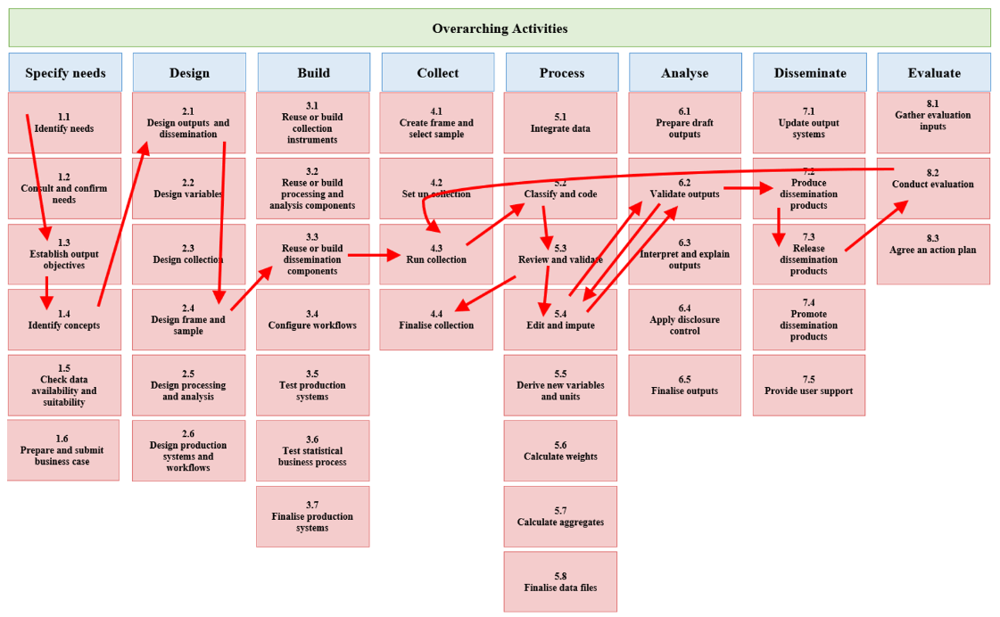Figure 1. Example of how iteration may occur in an example pathway through the GSBPM
9. In many statistical organisations, the first few phases are only considered when a new output is created or when the process is revised as a result of an evaluation process. Once the output becomes part of “normal” ongoing activity, these phases are not always undertaken (for example, it is not necessary to build new collection tools every time labour force survey data are collected). Figure 2 depicts this.
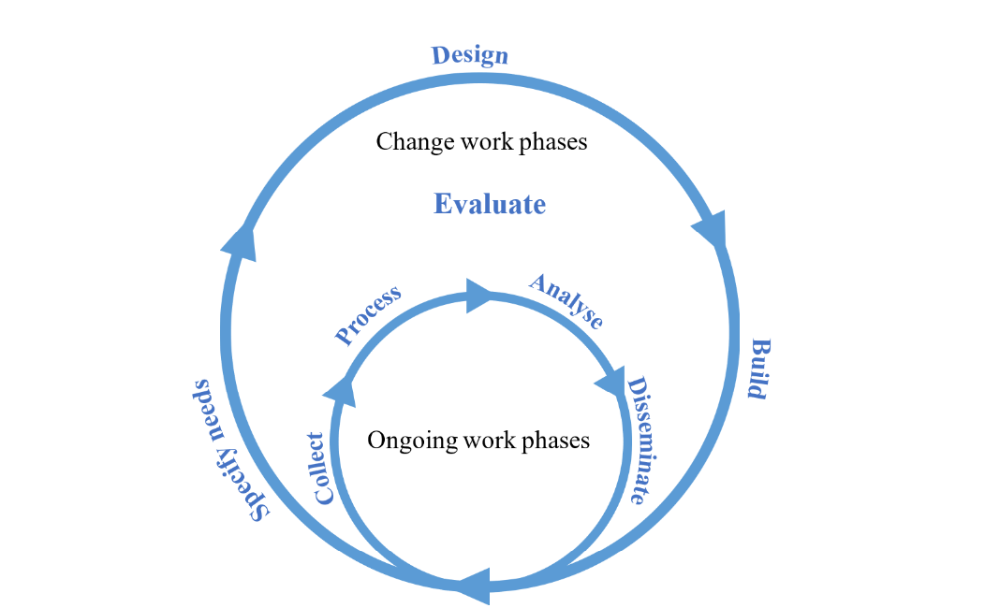Figure 2. Ongoing work phases and change work phases of the GSBPM
10. The GSBPM should therefore be seen more as a matrix, through which there are many possible paths. In this way, the GSBPM aims to be sufficiently generic to be widely applicable and to encourage a standard view of the statistical business process, without becoming either too restrictive or too abstract and theoretical. The GSBPM supports modularisation of statistical production, for example by allowing often-performed steps to be performed by a reusable software component, perhaps shared across a statistical organisation or even across multiple organisations.
11. The GSBPM considers a number of different entities to be considered by a statistical business process, such as:
- Users: Consumers of statistical outputs (e.g., policymakers, researchers, businesses, and the public).
- Respondents: Entities providing information about themselves or others (primary data) to statistical organisations or other producers of official statistics through forms, surveys, or polls.
- Data holders: Custodians of datasets generated or collected for non-statistical purposes, such as government agencies, private companies, or registry managers, who may or may not provide data to NSOs.
- Data suppliers: Data holders supplying data to NSOs, including administrative, geospatial, or other non-survey data.
- Stakeholders: A broad category encompassing users, respondents, data suppliers, data holders, and other parties involved in or affected by the statistical process.
Structure
12. The GSBPM comprises three main levels, with the extension to an optional extra lower level of “tasks” that are described in Annex I, as follows:
- Level 0, the statistical business process;
- Level 1, the eight phases of the statistical business process;
- Level 2, the sub-processes within each phase;
- Level 3, the tasks within each sub-process.
13. A diagram showing the phases (level 1) and sub-processes (level 2) is included in Section IV (Figure 5). The sub-processes are described in detail in Section VI.
14. The GSBPM recognises several activities with a strong statistical component that apply throughout the eight phases, called “Overarching Activities” in the model. These overarching activities are listed below and elaborated further in Section V:
- Quality Management - This overarching activity includes quality assessment and control mechanisms. It recognises the importance of evaluation and feedback throughout the statistical business process;
- Metadata Management - Metadata are created/reused and processed within each phase, so there is a strong requirement for metadata management to ensure the appropriate metadata retain their links with data throughout the GSBPM. This includes process-independent considerations such as metadata custodianship and ownership, quality, archiving rules, preservation, retention and disposal;
- Data Management - This includes process-independent considerations such as general data security, custodianship, and ownership, data quality, archiving rules, preservation, retention and disposal;
- Process Data Management - This includes activities of registering, systematising and using data about the implementation of the statistical business process. Process data can aid in detecting and understanding patterns in the data collected, as well as in evaluating the execution of the statistical business process as such;
- Knowledge Management - An ongoing activity that mainly involves maintaining the documentation of recurring statistical business processes, ensuring that they are repeatable;
- Data Supplier Management - This includes cross-process burden management, as well as topics such as profiling and management of contact information (and thus has particularly close links with statistical business processes that maintain registers).
Applicability
15. The GSBPM is intended to apply to all activities undertaken by producers of official statistics at both the national and international levels, which result in data outputs.
16. The model is designed to be applicable regardless of the data source, so it can be used for the design, description, management and quality assessment of processes based on surveys, censuses, administrative sources, and other sources that are primarily collected for non-statistical purposes but may be utilised for statistical production, including the following (non-exclusive) types:
- Administrative data: Data generated through routine administrative operations by public entities, such as tax records, health registries, or school enrolments.
- Privately held data: Data generated through routine operations by private entities, such as commercial transactions, digital platform records, or social media interactions.
- “Big Data”: High-volume, high-velocity, and high-variety data derived from digital technologies, such as social media activity, mobile device usage, and sensor networks.
- Geospatial data: Data containing geographic or locational attributes, including satellite imagery, GPS data, and mapping systems, which GSBPM considers in a statistical context[2].
17. Whilst typical statistical business processes include collecting and processing data to produce statistical outputs, the GSBPM also applies when existing data are revised, or time-series are re-calculated, either as a result of improved source data or a change in methodology. In these cases, the input data can be original microdata and/or additional data, which are then processed and analysed to produce revised outputs. In such cases, it is likely that several sub-processes and possibly some phases (particularly the early ones) would be omitted. Similarly, the GSBPM can be applied to processes such as the compilation of national accounts and the typical processes in international statistical organisations that use secondary data from countries or other organisations.
18. As well as being applicable for processes which result in statistical outputs, the GSBPM can also be applied to the development and maintenance of statistical registers, where the inputs are similar to those for statistical production (though typically with a greater focus on administrative data), and the outputs are typically frames or other data extractions, which are then used as inputs to other processes.
19. Artificial intelligence (AI) and machine learning (ML) play an increasingly prominent role in statistical production, facilitating the automation of manual tasks and utilisation of new types of data, and ML is referenced where strongly pertinent, notably in the processing and analysis phases. AI and ML have the potential to be powerful tools in the context of the statistical production process, but also need to be used appropriately, for example to ensure the validity of any outputs produced. However, GSBPM remains applicable irrespective of specific technologies or methods used to carry out the activities in the process.
20. The GSBPM is sufficiently flexible to apply in all of the above scenarios.
Using the GSBPM
21. The GSBPM is a reference model. It is intended that the GSBPM may be used by organisations to different degrees. An organisation may choose to either use the GSBPM directly or use it as the basis for developing a customised version of the model. It may be used in some cases only as a model to which organisations refer when communicating internally or with other organisations to clarify discussions. The various scenarios for the use of the GSBPM are all valid.
22. When organisations have developed organisation-specific adaptions of the GSBPM, they may make some specialisations to the model to fit their organisational context. Such specialisations may be considered for incorporation within future versions of GSBPM if sufficiently generic and widely supported.
23. In some cases, it may be appropriate to group some of the elements of the model. For example, the initial three phases could be considered to correspond to a single planning phase. In other cases, particularly for practical implementations, there may be a need to specify components of sub-processes in more detail, and for this purpose, some earlier work on lower-level “Tasks” is provided in Annex 1.
24. There may also be a requirement for a formal sign-off between phases or sub-processes, where the output from one phase is certified as suitable as input for the next. This formal approval is implicit in the model (except in the sub-process 1.6) but may be explicitly implemented in different ways depending on organisational requirements.
III. Relationships with Other Models and Frameworks
25. Since the release of the GSBPM, several models have been developed under the auspices of the HLG-MOS to support the modernisation of official statistics, collectively referred to as the “ModernStats” models. The following paragraphs outline the ModernStats models that have a strong link to the GSBPM
GAMSO
26. The GAMSO[3] complements and extends the GSBPM by describing and defining activities that take place within a typical statistical organisation that are either not directly related to the production of statistics or that are managed at a corporate or strategic level (i.e. activities in the areas of strategy and leadership, capability development and corporate support).
27. Such activities include human resource management, and quality management activities that are carried out at the corporate level such as development of a quality framework, among others. GAMSO includes high level descriptions of these activities. GSBPM is nested within GAMSO and comprises its “production” activity area, as depicted in Figure 3.
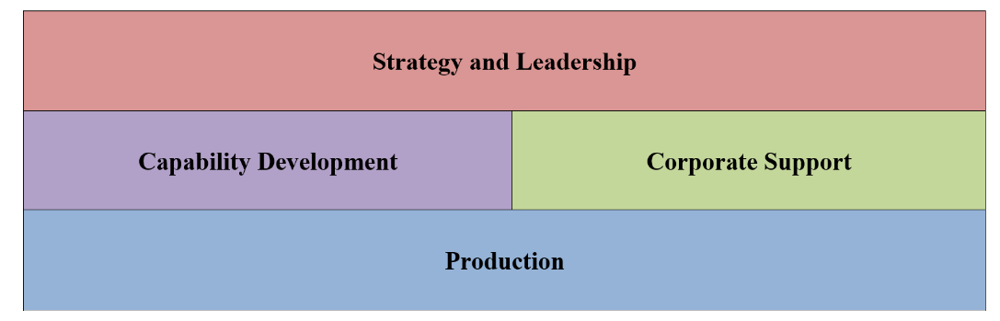Figure 3. Activity areas of the GAMSO, as depicted in GAMSO version 1.2
28. Like the GSBPM, the GAMSO aims to provide a common vocabulary and framework to support international collaboration activities. Greater value will be obtained from the GAMSO if it is applied in conjunction with the GSBPM.
GSIM
29. The GSIM[4] is a reference framework for statistical information, designed to help modernise official statistics at both national and international levels. It enables generic descriptions of the definition, management and use of information (i.e. data and metadata) throughout the statistical production process. It provides a set of standardised, consistently described information classes, which are the inputs and outputs for GSBPM sub-processes. The GSIM helps to explain significant relationships among the entities involved in statistical production, and can be used to guide the development and use of consistent implementation standards or specifications.
30. Like the GSBPM, the GSIM is one of the cornerstones for modernising official statistics and moving away from subject matter silos. It identifies around 130 information classes, examples of which include data sets, variables, statistical classifications, units, populations as well as the rules and parameters needed for production processes to run (e.g. data editing rules).
31. The GSIM and the GSBPM are complementary models for the production and management of statistical information. As shown in Figure 4 below, the GSIM helps to describe the GSBPM sub-processes by defining the information classes that flow between them, that are created within them, and that are used by them to produce official statistics. Inputs and outputs can be defined in terms of information classes and are formalised in the GSIM.
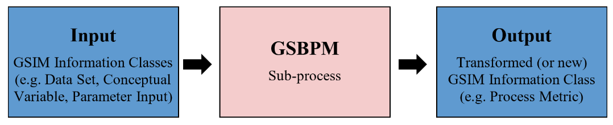Figure 4. The GSIM information classes as input and output of the GSBPM sub-process
32. Greater value will be obtained from the GSIM if it is applied in conjunction with the GSBPM. Likewise, a greater value will be obtained from the GSBPM if it is applied in conjunction with the GSIM. Nevertheless, it is possible (although not ideal) to apply one without the other.
33. Applying the GSIM and the GSBPM together can facilitate the building of efficient metadata-driven systems and help to harmonise statistical computing infrastructures[5].
IV. Levels 1 and 2 of the GSBPM
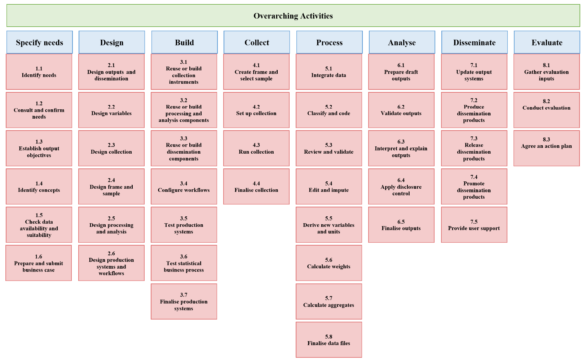Figure 5. The phases (level 1) and sub-processes (level 2) of the GSBPM
V. Descriptions of Overarching Activities
34. The GSBPM recognises several overarching activities that apply throughout the production phases, and across statistical business processes. For example, quality is monitored and checked at various stages of the production. Management of data and metadata is done throughout the process, not at a certain sub-process only. While the production process involves different units and expertise in the organisation at different stages, it is important that these overarching activities are conducted in a consistent manner in accordance with organisation-wide standards and policies, and with close coordination with a central unit.
35. These overarching activities are listed in Section II and elaborated further in the following subsections. Activities that are carried out at the level of the organisation to support the statistical production are included in the GAMSO (see Section III).
Quality Management
36. The quality management overarching activity of GSBPM refers specifically to the management of product and process quality that takes place within the scope of the production process.
37. More broadly, the concept of quality concerns organisations, products, sources and processes. Quality at an institutional level (e.g. adoption of a Quality Policy or Quality Assurance Framework) or in areas that are not directly related to the production (e.g., quality of new employee onboarding programme) is considered in the GAMSO.
38. The main goal of quality management within the statistical business process is to understand and manage the quality of the statistical sources, processes and products. There is general agreement among statistical organisations that quality should be defined according to the ISO 9000-2015 standard: “The degree to which a set of inherent characteristics of an object fulfils requirements"[6]. Thus, quality is a complex and multi-faceted concept, usually defined in terms of several quality dimensions. The dimensions of quality that are considered most important depend on user perspectives, needs and priorities, which vary between processes and across groups of users.
39. In order to improve quality, quality management should be present throughout the business process model. It is closely linked to the Evaluate phase, however, quality management has both a deeper and broader scope. As well as evaluating iterations of a process, it is also necessary to evaluate separate phases and sub-processes, ideally each time they are applied, but at least according to an agreed schedule[7]. Metadata generated by the different sub-processes themselves are also of interest as an input for process quality management. These evaluations can apply within a specific process, or across several processes that use common components. In addition, a fundamental role in quality management is played by the set of quality control actions that should be implemented within the sub-processes to prevent and monitor errors and sources of risks. These should be documented, and can be used for quality reporting.
40. Within an organisation, quality management will usually refer to a specific quality framework, and may therefore take different forms and deliver different results within different organisations. The current multiplicity of quality frameworks enhances the importance of the benchmarking and peer review approaches to evaluation, and whilst these approaches are unlikely to be feasible for every iteration of every part of every statistical business process, they should be used in a systematic way according to a pre-determined schedule that allows for the review of all main parts of the process within a specified time period[8].
41. Broadening the field of application of the quality management overarching activity, evaluation of groups of statistical business processes can also be considered, in order to identify potential duplication or gaps.
42. All evaluations result in feedback, which should be used to improve the relevant process, phase or sub-process, creating a quality loop that reinforces the approach to continuous improvements and organisational learning. The Quality loop has four main stages:
- Plan : The Plan stage refers mainly to the first three phases of GSBPM. Selecting a quality framework or designing one must be part of the design of the production process, to have the means of producing information needed to manage quality of the process and of the statistical products;
- Run: When running the process, care must be taken to compile data and metadata for quality management, with updated data and metadata coming from performing each phase of GSBPM;
- Evaluate: Assessment of quality indicators must be made throughout the process to make any needed correction on time. During the Evaluate phase, a summary and analysis of the quality information gathered together with any change made during the process will generate conclusions about any improvements that may be needed;
- Improve: In response to the quality assessment, any needed improvements to the process can be applied, and then reflected during the Plan stage of the cycle.
Figure 6. Quality loop
43. Examples of quality management activities include:
- Assessing risks and implementing risk treatments to ensure fit-for-purpose quality;
- Setting quality criteria to be used in the process;
- Setting process quality targets and monitoring compliance;
- Seeking and analysing user feedback;
- Reviewing operations and documenting lessons learned;
- Examining process metadata and quality indicators;
- Internal or external auditing on the process.
44. Quality indicators support a process-oriented quality management. A suggested list of quality indicators for phases and sub-processes of the GSBPM as well as for the overarching quality and Metadata Management processes can be found at the Quality Indicators for the GSBPM – for Statistics derived from Surveys and Administrative Data Sources[9]. Among others, they can be used as a checklist to identify gaps and/or duplication of work in the organisation.
Metadata Management
45. Metadata has an important role and must be managed at an operational level within the statistical production process, in accordance with relevant corporate policies and standards. When aspects of metadata management are considered at corporate or strategic level (e.g. there are metadata systems that impact large parts of the production system), it should be considered in the framework of the GAMSO.
46. Good metadata management is essential for the efficient operation of statistical business processes. Metadata are present in every phase, either created, updated or carried forward from a previous phase or reused from another business process. In the context of this model, the emphasis of the overarching activity of metadata management is on the design/creation/revision, updating, use, and archiving of statistical metadata, though metadata on the different sub-processes themselves are also of interest, including as an input for quality management. The key challenge is to ensure that these metadata are captured as early as possible, and stored and transferred from phase to phase alongside the data they refer to. Metadata management strategy and systems are therefore vital to the operation of this model, and these can be facilitated by the GSIM.
47. The GSIM supports a consistent approach to metadata, facilitating the primary role for metadata, that is, that metadata should uniquely and formally define the content and links between information classes and processes in the statistical information system.
Data Management
48. Data management is essential as data are produced within many of the activities in the statistical business process and are the key outputs. The main goal of data management is to ensure that data are appropriately used and usable throughout their lifecycle. Managing data throughout their lifecycle covers activities such as planning and evaluation of data management processes as well as establishing and implementing processes related to collection, organisation, use, protection, preservation and disposal of the data.
49. How data are managed will be closely linked to the use of the data, which in turn is linked to the statistical business process where the data are created. Both data and the processes in which they are created must be well defined in order to ensure proper data management.
50. Examples of data management activities include:
- Designing data structures and associated data sets, and the provenance and flow of data through the statistical business process;
- Identifying database (repositories) to store the data and administration of the database;
- Documenting the data (e.g. registering and inventorying data, classifying data according to content, retention or other required classification);
- Determining retention periods of data and archiving;
- Securing data against unauthorised access and use;
- Safeguarding data against technological change, physical media degradation, data corruption;
- Performing data integrity checks (e.g. periodic checks providing assurance about the accuracy and consistency of data over its entire lifecycle);
- Performing disposition activities once the retention period of the data is expired.
Process Data Management
51. The Process Data Management overarching activity within GSBPM refers to the management of process data that takes place within the scope of the production process. Activities related to management of process data at the corporate level should be considered in the framework of the GAMSO.
52. This overarching activity includes activities of registering, systematising, and using data arising from carrying out the statistical business process. This could include, for example, paradata [10], logs resulting from the execution of code, as well as information arising from fieldwork. This data is not quality information in itself, as it may be very detailed (such as the length of time taken by a single field worker to conduct a single interview), but it could possibly be used to derive quality information (such as total or average time for conducting interviews).
53. Such process data can be reviewed to evaluate how the statistical business process is carried out, for example to optimise its efficiency, or to detect possible problems that have occurred and reveal their cause. Process data could also be used to detect and understand patterns in the data used to produce statistics.
Knowledge Management
54. The Knowledge Management overarching activity refers to the management of knowledge specific to the production process. Activities related to knowledge management at the corporate level should be considered in the framework of the GAMSO, such as GAMSO’s Manage Information and Knowledge, under its Corporate Support area.
55. This Knowledge Management overarching activity within GSBPM refers specifically to the updating of documentation for the production process (e.g. handbooks, manuals, guidance notes already created within sub-process 3.7 (Finalise production systems)) based on knowledge about it. Managing knowledge in a systematic way using such documentation allows it to inform and improve the production process. It can be taken into account when developing training for those who produce statistics, and can also inform evaluation of the production process.
56. Knowledge can be derived from a diverse array of sources, including the experience obtained from each of the individuals involved in the process, which may relate to the code of algorithms, software programmes and scripts used along the statistical lifecycle, good practices, or lessons learned. Reference metadata, analysis of paradata, incidents, process logs, data anomalies, and other subproducts of the statistical process execution, while not knowledge in themselves, can all lead to useful knowledge about the production process which can be documented in order to be passed on to others.
Data Supplier Management
57. The Data Supplier Management overarching activity within GSBPM refers to the management of data suppliers that takes place within the scope of the production process. Activities related to management of data suppliers at the corporate level should be considered in the framework of the GAMSO, such as in its Manage Data Suppliers activity under Corporate Support.
58. Building on GAMSO's corporate support activity Manage Data Suppliers, which emphasises managing data suppliers, such as ensuring compliance with agreements, this overarching activity within GSBPM extends to technical-level engagement with data suppliers, including those supplying registers.
59. This overarching activity can include:
- Requiring specific information about the input data when metadata and/or documentation are scarce;
- Asking for assistance from the data supplier to overcome technical or operational issues; and/or
- Requesting additional information in case of unexpected changes in the data received.
- Cross-process burden management, profiling and management of contact information (e.g. within registers).
VI. Descriptions of Phases and Sub-processes
60. This section considers each phase in turn, identifying the various sub-processes within that phase and describing their contents.
Specify Needs Phase
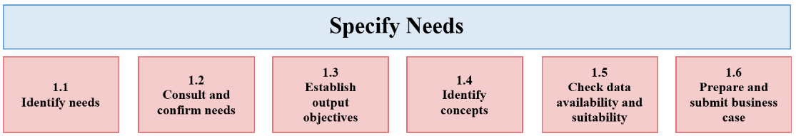Figure 7. Specify needs phase and its sub-processes
61. This phase is triggered when a need for new statistics is identified, perhaps resulting from user feedback, or a review is undertaken. It includes all activities associated with engaging stakeholders to identify their detailed statistical needs (current or future), proposing high level solution options and preparing a business case, which may weigh the benefits of addressing these needs against expected costs, risks and other requirements, considering the public good arising from meeting those needs and the implications for respondents, users and other stakeholders.
62. The Specify Needs phase is broken down into six sub-processes (Figure 7), which are presented sequentially, from left to right, but can also occur in parallel, and can be iterative. These sub-processes are:
1.1. Identify needs
63. This sub-process includes the initial investigation and identification of what statistics are needed and what is needed of the statistics. It may be triggered by a new information request from users, an environmental change such as a reduced budget, a periodic review, or respondent feedback. Action plans [11] from evaluations of previous iterations of the production cycle (including from respondent feedback) or from other programmes might provide an input to this sub-process. It also includes consideration of practice amongst other (national and international) statistical organisations producing similar data and the methods used by those organisations.
1.2. Consult and confirm needs
64. This sub-process focuses on consulting with the internal and external stakeholders and confirming in detail the needs for the statistics. A good understanding of user needs is required so that the statistical organisation knows not only what it is expected to deliver, but also when, how, and perhaps most importantly, why. For the second and subsequent iterations of this sub-process, the main focus will be on determining whether previously identified needs have changed. This detailed understanding of user needs is the critical part of this sub-process.
1.3. Establish output objectives
65. This sub-process identifies the statistical output objectives that are required to meet the user needs confirmed in sub-process 1.2 (Consult and confirm needs). It includes agreeing the suitability of the proposed outputs and their quality measures with users. Legal or normative frameworks (e.g. relating to confidentiality, methodologies), and available resources are important to consider when establishing output objectives.
1.4. Identify concepts
66. This sub-process clarifies the required concepts to be measured from the point of view of the users. At this stage, the concepts identified might not align with existing statistical standards. This alignment, and the choice or definition of the statistical and other concepts and variables to be used, takes place in sub-process 2.2 (Design variables).
1.5. Check data availability and suitability
67. This sub-process checks whether current sources of data could meet user requirements and the conditions under which they would be available, including any restrictions on their use. An assessment of possible alternatives would normally include research into potential administrative or other non-statistical sources of data (e.g. privately-held data or “Big Data”), to:
- Determine whether they would be suitable for use for statistical purposes (e.g. the extent to which administrative concepts match data requirements, and whether the timeliness and quality of the data, security, and continuity of data supply are suitable);
- Assess the division of responsibilities between data suppliers and the statistical organisation;
- Check necessary ICT resources (e.g. data storage, technology required to handle incoming data and data processing) as well as any provision agreements with data suppliers (which could be legal or other agreements such as memoranda of understanding) for accessing and sharing the data (e.g. formats, delivery, accompanying metadata and quality check).
68. When existing sources have been assessed, a strategy for filling any remaining gaps in the data requirement is prepared. This may include identifying possible partnerships with data holders or conducting a new survey to collect data if necessary. This sub-process also includes a more general assessment of the legal framework in which data would be collected and used, and may therefore identify proposals for changes to existing legislation or the introduction of a new legal framework.
1.6. Prepare and submit business case
69. This sub-process documents the findings of the other sub-processes in this phase, in the form of a business case to get approval to implement the new or modified statistical business process. Such a business case would need to conform to the requirements of the approval body, but would typically include elements such as:
- A description of the “As-Is” business process (if it already exists), with information on how the current statistics are produced, highlighting any inefficiencies and issues to be addressed;
- The proposed “To-Be” solution, detailing how the statistical business process will be developed to produce the new or revised statistics;
- An assessment of costs and benefits against objectives and any external constraints.
70. The business case describes options and makes recommendations. It may include the benefits, costs, deliverables, time frame, budget, required technical and human resources, risk assessment and impact on stakeholders for each option.
71. After the business case is prepared, it is submitted for approval to move to the next phase of the business process. At this sub-process, a “go”/“no go” decision is made. Typically, the business case is reviewed and formally approved or disapproved by the appropriate sponsors and governance committees.
Design Phase
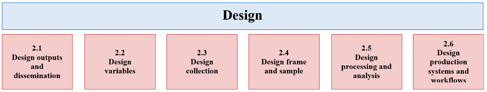Figure 8. Design phase and its sub-processes
72. This phase describes the development and design activities, and any associated practical research work needed to define the statistical outputs, variables, methodologies, collection instruments and operational processes, with due regard to other requirements such as security. It includes all the design elements needed to define or refine the statistical products or services identified in the business case. This phase specifies all relevant metadata, in accordance with the standards and corporate policies, ready for use later in the business process, as well as quality assurance procedures. For statistical outputs produced on a regular basis, this phase usually occurs for the first iteration and whenever improvement actions are identified in the Evaluate phase of a previous iteration.
73. Design activities make substantial use of international and national standards in order to reduce the length and cost of the design process, and enhance interoperability, comparability, etc. Organisations may reuse or adapt design elements from existing processes and consider geospatial aspects of data in the design to enhance the usability and value of the statistical information. Additionally, outputs of design processes may form the basis for future standards at the organisational, national or international levels.
74. The Design phase is broken down into six sub-processes (Figure 8), which are presented sequentially, from left to right, but can also occur in parallel, and can be iterative. Some approaches used to develop tools and systems involve iteration between sub-processes in the Design and Build phases. The sub-processes of the Design phase are:
2.1. Design outputs and dissemination
75. This sub-process contains the detailed design of the statistical outputs, products and services to be produced, including the related systems, tools and procedures used in the Disseminate phase. Processes governing access to any confidential outputs are also designed here. Outputs should be designed to follow existing standards wherever possible, so inputs to this process may include metadata from similar or previous collections (including extractions from statistical, administrative, geospatial and other non-statistical registers and databases), international standards, and information about practices in other statistical organisations from sub-process 1.1 (Identify needs). Outputs may also be designed in partnership with other interested bodies, particularly if they are considered to be joint outputs, or they will be disseminated by another organisation.
2.2. Design variables
76. This sub-process defines the variables to be collected via the collection instrument, as well as any other variables that will be derived from them in sub-process 5.5 (Derive new variables and units), and any statistical or geospatial classifications that will be used. This is also where unit types (including observation units and statistical units) can be designed. It is expected that existing national and international standards will be followed wherever possible. This sub-process may need to run in parallel with sub-process 2.3 (Design collection), as the definition of the variables to be collected and the choice of collection instruments may be inter-dependent to some degree. Preparation of metadata for collected and derived variables, statistical and geospatial classification is a necessary precondition for subsequent phases.
2.3. Design collection
77. This sub-process prepares a collection strategy for the data, and determines the most appropriate collection instruments and methods, which may depend on the type of data collection, the collection unit type (enterprise, person, or other) and the available sources of data. The actual activities in this sub-process will vary according to the type of collection instrument required, which can include computer assisted interviewing, paper questionnaires, administrative registers, automated and semi-automated data transfer methods (such as using APIs, machine-to-machine integrations and various types of file transfers), web-scraping technologies as well as technology for geospatial data. The collection may employ a multi-mode method which requires additional considerations such as design of sequencing or different instruments for different modes. Direct or indirect use of administrative data may be introduced in the data collection mode for either controlling survey data or assisting it when capturing survey information.
78. In the case of survey (or census) data, this collection strategy includes the design of the collection instruments, questions and response templates (in conjunction with the variables and statistical classifications designed in sub-process 2.2 (Design variables)). It is important to understand respondents and incorporate the user perspectives in the design of data collection. This sub-process may include design of fieldwork operations, and respondent engagement, in the case of survey data collection. It also includes the confirmation of existing agreements or creation of new agreements. This sub-process is enabled by tools such as question libraries (to facilitate the reuse of questions and related attributes), questionnaire tools (to enable the quick and easy compilation of questions into formats suitable for cognitive testing) and agreement templates (to help standardise terms and conditions). This sub-process also includes the design of respondent management systems that are specific to this business process.
79. Where statistical organisations do not collect data directly (i.e. a third party controls the collection and processing of the data), this sub-process may include the design of mechanisms to monitor the data and the metadata to assess impacts of any change made by the third party.
2.4. Design frame and sample
80. This sub-process applies especially to processes which involve data collection based on sampling, such as through statistical surveys, but it may also apply to other types of data collection such as census or register-based (e.g., filtering of registers based on the target population). It identifies and specifies the population of interest, defines a sampling frame (and, where necessary, the register from which it is derived), and determines the most appropriate sampling criteria and methodology (which could include complete enumeration). Common sources for a sampling frame are administrative and statistical registers, censuses and information from other sample surveys. It may refer to geospatial data and classifications. This sub-process describes how these sources can be combined if needed. Analysis of whether the frame covers the target population should be performed. Spatial analysis techniques can be used to ensure the spatial distribution of the units is appropriate. A sampling plan should be made. The actual sample is created in sub-process 4.1 (Create frame and select sample), using the methodology specified in this sub-process.
2.5. Design processing and analysis
81. This sub-process designs the statistical methodology to be applied during the Process and Analyse phases. This can include, among others, specification of routines and rules for coding, editing and imputation, which may vary based on the means of data collection and source of data. This sub-process also includes design of specifications for data integration from multiple data sources, validation of data and estimation. Statistical disclosure control methods are also designed here if they are specific to this business process.
2.6. Design production systems and workflows
82. This sub-process determines the workflow from data collection to dissemination, taking an overview of all the processes required within the whole production process and ensuring that they fit together efficiently with no gaps or redundancies. Various systems and databases may be needed throughout the process. The GSBPM can be used to design a statistical organisation’s business architecture layer when a statistical organisation has an existing enterprise architecture in place. The design might be adjusted to fit the organisation. A general principle is to reuse processes and technology across many statistical business processes, so existing production solutions (e.g. services, systems and databases) should be examined first, to determine whether they are fit for purpose for this specific production process, then, if any gaps are identified, new solutions can be designed. This sub-process also considers how staff will interact with systems and who will be responsible for what and when.
Build Phase
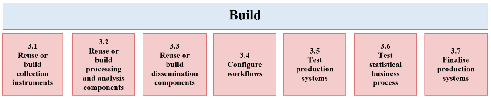Figure 9. Build phase and its sub-processes
83. This phase builds and tests the production solution to the point where it is ready for use in the “live” environment. The outputs of the Design phase are assembled and configured in this phase to create the complete operational environment to run the process. New services are built by exception, created in response to gaps in the existing catalogue of services sourced from within the organisation and externally. These new services are constructed to be broadly reusable in alignment with the business architecture of the organisation where possible, and compliant with security requirements.
84. For statistical outputs produced on a regular basis, this phase usually occurs for the first iteration, following a review or a change in methodology or technology, rather than for every iteration.
85. The Build phase is broken down into seven sub-processes (Figure 9), which are presented sequentially, from left to right, but can also occur in parallel, and can be iterative. Some approaches used to develop tools and systems involve iteration between sub-processes in the Design and Build phases. The first three sub-processes are concerned with the development and improvement of systems used in collection, processing, analysis and dissemination of data. The last four sub-processes focus on the end-to-end process. These sub-processes are:
3.1. Reuse or build collection instruments
86. This sub-process describes the activities to build and reuse the collection instruments needed during the Collect phase. The collection instruments are built based on the design specifications created during the Design phase. A collection may use one or more collection instruments to receive the data (e.g. personal or telephone interviews; paper, electronic or web questionnaires; SDMX web services). Collection instruments may also be data extraction routines used to gather data from existing statistical or administrative registers (e.g. by using existing service interfaces). This sub-process also includes preparing and testing the contents and functioning of that collection instrument (e.g. cognitive testing of the questions in a questionnaire). It is recommended to consider the direct connection of collection instruments to a metadata system, so that metadata can be more easily captured in the collection phase. Connecting metadata and data at the point of capture can save work in later phases. Capturing the metrics of data collection (paradata) is also an important consideration in this sub-process for calculating and analysing process quality indicators.
3.2. Reuse or build processing and analysis components
87. This sub-process describes the activities to reuse existing components or build new components needed for the Process and Analyse phases, as designed in the Design phase. Services (re-)used may include dashboard functions and features, information services, transformation functions, geospatial data services, workflow management tools, respondent and metadata management services.
3.3. Reuse or build dissemination components
88. This sub-process describes the activities to build new components or reuse existing components needed for the dissemination of statistical products as designed in sub-process 2.1 (Design outputs and dissemination). All types of dissemination components are included, from those that produce traditional paper publications to those that provide web services, (linked) open data outputs, geospatial statistics, maps, or access to microdata.
3.4. Configure workflows
89. This sub-process configures the workflows, systems and transformations used within the business processes, from data collection through to dissemination. In this sub-process, the workflows are configured based on the design created in sub-process 2.6 (Design production systems and workflows). This could include modifying a standardised workflow for a specific purpose, assembling the workflows for the different phases together (possibly with a workflow/business process management system) and configuring systems accordingly.
3.5. Test production systems
90. This sub-process is concerned with the testing of assembled and configured services and related workflows. It includes technical testing and sign-off of new programmes and routines, as well as confirmation that existing routines from other statistical business processes are suitable for use in this case. Whilst part of this activity concerning the testing of individual components and services could logically be linked with sub-processes 3.1 (Reuse or build collection instruments), 3.2 (Reuse or build processing and analysis components) and 3.3 (Reuse or build dissemination components), this sub-process also includes testing of interactions between assembled and configured services and ensuring that the whole production solution works in a coherent way. It can also include arranging secure channels for the transmission of the data, checking detailed information about files and metadata with a data supplier and receiving test files to assess if data are fit for use.
3.6. Test statistical business process
91. This sub-process describes the activities to manage a field test or pilot of the statistical business process. Typically, it includes a small-scale data collection, to test the collection instruments, followed by processing and analysis of the collected data, to ensure the statistical business process performs as expected. Following the pilot, it may be necessary to go back to a previous step and make adjustments to collection instruments, systems or components. For a major statistical business process, e.g. a population census, there may be several iterations until the process is working satisfactorily.
3.7. Finalise production systems
92. This sub-process includes the activities to put the assembled and configured processes and services, including modified and newly-created services, into production ready for use. The activities include:
- Producing documentation about the process components, including technical documentation and user manuals;
- Training the users of the system on how to operate the process;
- Moving the process components into the production environment and ensuring they work as expected in that environment (this activity may also be part of sub-process 3.5 (Test production systems).
Collect Phase
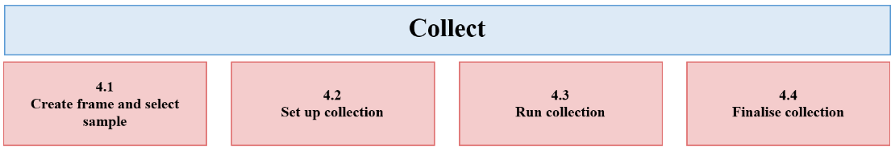Figure 10. Collect phase and its sub-processes
93. This phase collects or gathers all necessary information (e.g. data, metadata and paradata), using different collection approaches (e.g. acquisition, collection, extraction, transfer), and loads them into the appropriate environment for further processing. Whilst it can include validation of data set formats, it does not include any transformations of the data themselves, as these are all done in the Process phase. For statistical outputs produced regularly, this phase occurs in each iteration.
94. The Collect phase is broken down into four sub-processes (Figure 10), which are presented sequentially, from left to right, but can also occur in parallel, and can be iterative. These sub-processes are:
4.1. Create frame and select sample
95. This sub-process establishes the frame and selects the sample for this iteration of the collection, as specified in sub-process 2.4 (Design frame and sample). It also includes the coordination of samples between instances of the same business process (e.g. to manage overlap or rotation), and between different processes using a common frame or register (e.g. to manage overlap or to spread response burden). Quality assurance and approval of the frame and the selected sample are also undertaken in this sub-process, though maintenance of underlying registers, from which frames for several statistical business processes are drawn, is treated as a separate activity. The sampling aspect of this sub-process is often not relevant for processes based entirely on the use of pre-existing sources (e.g. administrative sources and other non-survey sources) as such processes generally create frames from the available data and then follow a census approach. Variables from administrative and other non-statistical sources of data can be used as auxiliary variables in the construction of sampling design.
4.2. Set up collection
96. This sub-process ensures that the people, processes and technology (e.g. web-based applications, devices to be used in collection, communication channels) are ready to collect data and metadata, as designed. It takes place over a period of time, as it includes the strategy, planning and training activities in preparation for the specific instance of the statistical business process. Where the process is repeated regularly, some (or all) of these activities may not be explicitly required for each iteration. For one-off and new processes, these activities can be lengthy. For survey data, this sub-process includes:
- Training collection staff;
- Training system using supervised machine learning techniques;
- Ensuring collection resources are available (e.g. collection devices, apps, APIs);
- Agreeing on terms with any intermediate collection bodies, (e.g. sub-contractors for computer assisted telephone interviewing, web service providers);
- Configuring collection systems to request and receive the data, including location data;
- Ensuring the security of data to be collected;
- Preparing collection instruments (e.g. printing questionnaires, pre-filling them with existing data, loading questionnaires and data onto interviewers' devices/computers, APIs, web scraping tools);
- Providing information for respondents (e.g. drafting letters/emails to respondents, credentials, guidance or tailored information to address questions they may have, or notifying respondents when online reporting instruments will be made available);
- Translation of materials (e.g. into the different languages spoken or used in the country).
97. For non-survey sources, this sub-process ensures that the necessary processes, systems and confidentiality procedures are in place, to receive or extract the necessary information from the source. This includes:
- Evaluating requests to obtain the data and logging the request in a centralised inventory;
- Initiating contacts with organisations providing the data, and sending an introductory package with details on the process of obtaining the data;
- Routine checks that the system is working as expected.
4.3. Run collection
98. This sub-process is where the collection is implemented. The different collection instruments are used to collect or gather the information, which may include raw microdata or aggregates produced at the source, as well as any associated metadata.
99. For survey or census data, it can include:
- Initial contact with respondents to request data and any subsequent follow-up or reminder actions, recording when and how they were contacted, and whether they have reacted;
- Management of the relationship between the statistical organisation and respondents, so that it remains positive, and recording and responding to comments, queries and complaints. (Minimisation of the number of non-respondents contributes significantly to higher quality of the collected data.);
- Manual data entry at the point of contact, or fieldwork management, depending on the source and collection approach;
- Georeferencing [12] at the same time as collection of the data (using inputs from location-enabled systems such as GPS), or recording location by putting a mark on a map, etc., depending on the geographical frame and the technology used.
100. Automated logical checks on data at the point of collection (i.e. validation-on-entry for survey response data) are considered to take place in 5.3 (Review and validate).
101. For administrative, geospatial, or other non-statistical data, the data supplier either sends it as scheduled or is contacted to send the information, which might require follow-ups. Broader technical-level engagement with data suppliers falls under the Data Supplier Management overarching activity. In the case where the data are published under an Open Data license and exist in machine-readable form, they may be freely accessed and used.
102. This sub-process may also include the monitoring of data collection and making any necessary changes to improve data quality. This includes generating reports, visualising and adjusting the process for obtaining data to ensure the data are fit for use. When the collection meets its targets, it is closed and a report on the collection is produced. Some basic checks of the structure and integrity of the information received may take place within this sub-process, (e.g. checking that files are in the right format and contain the expected fields).
4.4. Finalise collection
103. This sub-process includes loading the collected data and metadata into a suitable electronic environment for further processing. It may include manual or automatic data capture, for example, using clerical staff or optical character recognition tools to extract information from paper questionnaires, or converting the formats of files or encoding the variables received from other organisations. It may also include analysis of the metadata and paradata associated with collection to ensure the collection activities have met requirements. In cases where there is a physical collection instrument, such as a paper questionnaire, which is not needed for further processing, this sub-process manages the archiving of that material. When the collection instrument uses software such as an API or an app, this sub-process also includes the versioning and archiving of these. The data could be pseudonymised at this stage before further processing.
Process Phase
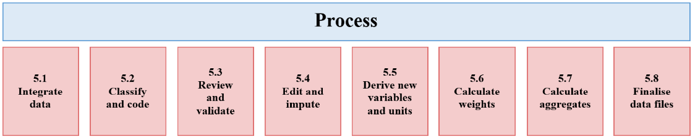Figure 11. Process phase and its sub-processes
104. This phase describes the processing of input data and their preparation for analysis. It is made up of sub-processes that integrate, classify, check, clean, and transform input data, so that they can be analysed and disseminated as statistical outputs. For statistical outputs produced regularly, this phase occurs in each iteration. The sub-processes in this phase can apply to data from both statistical and non-statistical sources (with the possible exception of sub-process 5.6 (Calculate weights), which is usually specific to survey data). Some variables could be processed prior to others if they are required for data integration (e.g., geospatial variables if used for that purpose).
105. The Process and Analyse phases can be iterative and parallel. Analysis can reveal a broader understanding of the data, which might make it apparent that additional processing is needed. Sometimes the estimates being processed might be already published aggregates (undertaken according to a Revision Policy).
106. Activities within the Process and Analyse phases may also commence before the Collect phase is completed. This enables the compilation of provisional results where timeliness is an important concern for users, and increases the time available for analysis.
107. The Process phase is broken down into eight sub-processes (Figure 11), which are presented sequentially, from left to right, but can also occur in parallel, and can be iterative. These sub-processes are:
5.1. Integrate data
108. This sub-process integrates data from one or more sources. It is where the results of sub-processes in the Collect phase are combined. The input data can be from a mixture of external or internal sources, and a variety of collection instruments, including extracts of administrative and other non-statistical data sources. Administrative data or other non-statistical sources of data can substitute for all or some of the variables directly collected from a survey. This sub-process also includes harmonising or creating new figures that agree between sources of data. The result is a consolidated set of data. Data integration can include:
- Combining data from multiple sources, as part of the creation of integrated statistics such as national accounts;
- Combining geospatial data and statistical data or other non-statistical data;
- Data pooling, with the aim of increasing the effective number of observations of some phenomena;
- Matching or record linkage routines, with the aim of linking micro or macro data from different sources;
- Data fusion - integration followed by reduction or replacement;
- Prioritising, when two or more sources contain data for the same variable, with potentially different values.
109. Data integration may take place at any point in this phase, before or after any of the other sub-processes. There may also be several instances of data integration in any statistical business process. Following integration, depending on data protection requirements, data may be de-identified, that is stripped of identifiers such as name and address, to help to protect confidentiality.
5.2. Classify and code
110. This sub-process classifies and codes the input data. For example, automatic (or clerical) coding routines may assign numeric codes to text responses according to a pre-determined statistical classification to facilitate data capture and processing. Some questions have coded response categories on the questionnaires or administrative source of data, others are coded after collection using an automated process (which may apply machine learning or artificial intelligence techniques) or an interactive, manual process.
5.3. Review and validate
111. This sub-process examines data to identify potential problems, errors and discrepancies such as outliers, item non-response, miscoding and duplicate records. It can also be referred to as input data validation. It may be run iteratively, validating data against pre-defined edit rules, usually in a set order. It may flag data for automatic or manual inspection or editing. Reviewing and validating can apply to data from any type of source, before and after integration, as well as imputed data from sub-process 5.4 (Edit and impute). Whilst validation is treated as part of the Process phase, in practice, some elements of validation may occur alongside collection activities, particularly for approaches such as computer assisted collection. Whilst this sub-process is concerned with detection and localisation of actual or potential errors, any correction activities that actually change the data is done in sub-process 5.4 (Edit and impute).
5.4. Edit and impute[13]
112. Where data are considered incorrect, missing, unreliable, outdated, or duplicated, new values may be inserted, or erroneous data may be removed in this sub-process. The terms editing and imputation cover a variety of methods to do this, often using a rule-based approach. Specific steps typically include:
- Determining whether to add or change data;
- Selecting the method to be used;
- Adding/changing data values;
- Writing the new data values back to the data set, and flagging them as changed;
- Producing metadata on the editing and imputation process.
5.5. Derive new variables and units
113. This sub-process derives data for variables and units that are not explicitly provided in the collection, but are needed to deliver the required outputs. It derives new variables by applying arithmetic formulae to one or more of the variables that are already present in the dataset, or applying different model assumptions. This activity may need to be iterative, as some derived variables may themselves be based on other derived variables. It is therefore important to ensure that variables are derived in the correct order. New units may be derived by aggregating or splitting data for collection units, or by various other estimation methods. Examples include deriving households where the collection units are persons or enterprises where the collection units are legal units.
5.6. Calculate weights
114. This sub-process creates weights for unit data records according to the methodology developed in sub-process 2.5 (Design processing and analysis). For example, weights can be used to “gross-up” data to make them representative of the target population (e.g. for sample surveys or extracts of scanner data), or to adjust for non-response in total enumerations. In other situations, variables may need weighting for normalisation purposes. It may also include weight correction for benchmarking indicators (e.g. known population totals).
5.7. Calculate aggregates
115. This sub-process creates aggregate data and population totals from microdata or lower-level aggregates. It includes summing data for records sharing certain characteristics (e.g. aggregation of data by demographic or geographic classifications), determining measures of average and dispersion, and applying weights from sub-process 5.6 (Calculate weights) to derive appropriate totals. In the case of statistical outputs which use sample surveys, sampling errors corresponding to relevant aggregates may also be calculated in this sub-process.
5.8. Finalise data files
116. This sub-process brings together the results of the other sub-processes in this phase in a data set (either micro- or macro-data), which is used as the input to the Analyse phase. Sometimes, this may be an intermediate rather than a final data set, particularly for business processes where there are strong time pressures, and a requirement to produce both preliminary and final estimates.
Analyse Phase
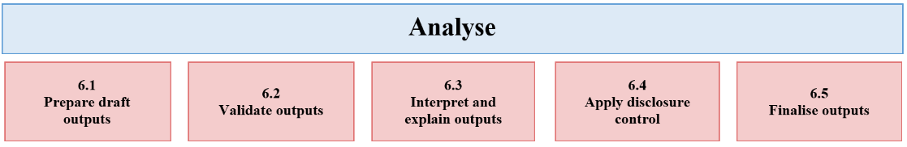Figure 12. Analyse phase and its sub-processes
117. In this phase, statistical outputs are produced and examined in detail. It includes preparing statistical content (including commentary, technical notes, etc.), and ensuring outputs are “fit for purpose” prior to dissemination to users. This phase also includes the sub-processes and activities that enable statistical analysts to understand the data and the statistics produced. The outputs of this phase could also be used as an input to other sub-processes (e.g. analysis of new sources as input to the Design phase). For statistical outputs produced regularly, this phase occurs in every iteration. The Analyse phase and sub-processes are generic for all statistical outputs, regardless of how the data were sourced.
118. The Analyse phase is broken down into five sub-processes (Figure 12), which are presented sequentially, from left to right, but can also occur in parallel, and can be iterative. These sub-processes are:
6.1. Prepare draft outputs
119. This sub-process is where the data from sub-processes 5.7 (Calculate aggregates) and 5.8 (Finalise data files) are transformed into statistical outputs, which could include indexes, seasonally adjusted statistics, mapped data, microdata, etc. The preparation of maps, GIS outputs and geo-statistical services can be included to maximise the value and capacity to analyse the statistical information. Methodological notes, to accompany the outputs and describe how they have been produced are also prepared in this sub-process taking as input the methodology designed in the Design phase. When new processing or analysis methods such as those based on machine learning or artificial intelligence are used, additional explanations might need to be prepared to communicate/explain the necessary information to the users.
6.2. Validate outputs
120. This sub-process is where statisticians validate the outputs produced, in accordance with a general quality framework and with expectations and also comparing with auxiliary information available (e.g. from previous cycles or from other sources). This sub-process may include activities involved with the gathering of intelligence, with the cumulative effect of building up a body of knowledge about a specific statistical domain, in order to check for errors and validate the data as objectively as possible. This knowledge is then applied to the current collection, in the current environment, to identify any divergence from expectations and to allow informed analyses. Validation activities can include:
- Comparing the statistics with previous cycles (if applicable);
- Checking that the associated metadata, paradata and quality indicators are present and in line with expectations;
- Checking geospatial consistency of the data;
- Confronting the statistics against other relevant data (both internal and external);
- Investigating inconsistencies in the statistics;
- Performing macro editing;
- Checking aggregates as a validation for a microdata set;
- Validating the statistics against expectations and domain intelligence.
6.3. Interpret and explain outputs
121. This sub-process is where outputs are interpreted in order to understand their meaning and to try to explain them. This can involve viewing the statistics from all perspectives using different tools and media, and carrying out various types of in-depth analysis to gain insight into the results and assess them against initial expectations, based also on an understanding of how those results were produced. Such analyses might include time series analysis and other econometric analyses, etc.
6.4. Apply disclosure control
122. This sub-process ensures that the data (and metadata) to be disseminated or internally stored for future use do not breach the appropriate rules on confidentiality according to either organisational policies and rules, or to the process-specific methodology created in sub-process 2.5 (Design processing and analysis). This may include checks for primary and secondary disclosure, as well as the application of data suppression or perturbation techniques and output checking. The degree and method of statistical disclosure control may vary for different types of outputs. For example, the approach used for microdata sets for research purposes will be different to that for published tables or visualisations at the aggregated level. Geospatial data or outputs from geospatial data may raise additional confidentiality challenges in terms of personal data protection and disclosure risk.
6.5. Finalise outputs
123. This sub-process ensures the statistics and associated information are fit for purpose and reach the required quality level and are thus ready for use. It includes:
- Completing consistency checks;
- Determining the level of release, and applying caveats;
- Collating supporting information, including interpretation, commentary, technical notes, briefings, measures of uncertainty and any other necessary metadata;
- Producing the supporting internal documents;
- Conducting pre-release discussion with appropriate internal subject matter experts;
- Translating the statistical outputs in countries with multilingual dissemination;
- Approving the statistical content for release.
Disseminate Phase
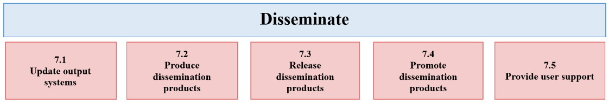Figure 13. Disseminate phase and its sub-processes
124. This phase manages the release of the statistical data and their products to users. It includes all activities associated with assembling and releasing a range of static and dynamic products via a range of channels. These activities support users to access and use the products released by the statistical organisation. For statistical products produced regularly, this phase occurs in each iteration.
125. Cataloguing and tagging released data and products using relevant metadata standards can greatly increase their discoverability and accessibility both internally and externally. International standards should be used as a norm to ensure that they can be found and consumed easily across a broad range of users. Linking data to geospatial classifications in particular can allow for detailed geographical presentation of outputs. While GSBPM conceives of archiving as taking place within the overarching Data Management and Metadata Management activities, its relevance to finalised outputs in this phase should be noted.
126. The Disseminate phase is broken down into five sub-processes (Figure 13), which are presented sequentially, from left to right, but can also occur in parallel, and can be iterative. These sub-processes are:
7.1. Update output systems
127. This sub-process manages the update of systems (e.g. databases) where data and metadata are stored ready for dissemination purposes, including:
- Formatting data and metadata ready to be put into output systems;
- Loading data and metadata into output systems;
- Ensuring data are linked to the relevant metadata.
128. Formatting, loading and linking of metadata should preferably mostly take place in earlier phases, but this sub-process includes a final check that all of the necessary metadata are in place ready for dissemination.
7.2. Produce dissemination products
129. This sub-process produces the dissemination products [14] , as previously designed in sub-process 2.1 (Design outputs and dissemination), to meet user needs. They could include publications, press releases and websites. The products can take many forms including interactive graphics, tables, maps, public-use microdata sets, linked open data and downloadable files. When the final products raise concern for confidentiality, additional disclosure control may be considered and applied via sub-process 6.4 (Apply disclosure control). Typical steps include:
- Preparing the product components (explanatory texts, tables, charts, maps, quality statements etc.);
- Assembling the components into products;
- Editing the products and checking that they meet publication standards.
7.3. Release dissemination products
130. This sub-process ensures that all elements for the release are in place including managing the timing of the release. It includes briefings for specific groups such as the press or ministers, as well as the arrangements for any pre-release embargoes. It also includes the provision of products to subscribers, and managing access to confidential data by authorised user groups, such as researchers. Sometimes an organisation may need to retract a product, for example, if an error is discovered. This is also included in this sub-process.
7.4. Promote dissemination products
131. Whilst marketing in general can be considered to be part of GAMSO, this sub-process concerns the active promotion of the statistical products produced in a specific statistical business process, to help them reach the widest possible audience. It includes the use of customer relationship management tools, to better target potential users of the products, as well as the use of tools including websites and other platforms like social media to facilitate the process of communicating statistical information to users. These activities may be coordinated with partners in the case of joint products.
7.5. Provide user support
132. This sub-process ensures that user queries and requests for services such as microdata access are recorded, and that responses are provided within agreed deadlines. These queries and requests should be regularly reviewed to provide an input to the overarching Quality Management activity, as they can indicate new or changing user needs. Replies to user requests can also be used to populate a knowledge database or a “Frequently Asked Questions” page, that is made publicly available, thus reducing the burden of replying to repeated and/or similar requests from external users. This sub-process also includes managing support to any partner organisations involved in disseminating the products.
Evaluate Phase
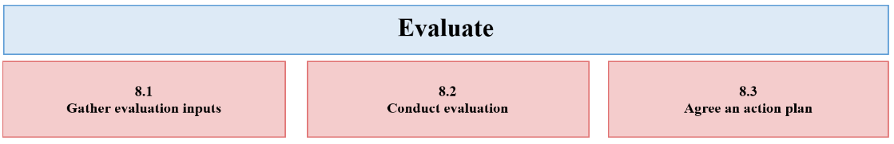Figure 14. Evaluate phase and its sub-processes
133. This phase manages the evaluation of a specific instance of a statistical business process, as opposed to the more general overarching activity of Quality Management described in Section V (Descriptions of overarching activities). It can take place at the end of the instance of the process, but can also be done on an ongoing basis during the statistical production process. It relies on inputs gathered throughout the different phases. It includes evaluating the success of a specific instance of the statistical business process, drawing on a range of quantitative and qualitative inputs, and identifying and prioritising potential improvements.
134. For statistical outputs produced regularly, evaluation should, at least in theory, occur for each iteration, determining whether future iterations should take place, and if so, whether any improvements should be implemented. However, in some cases, particularly for regular and well-established statistical business processes, evaluation might not be formally carried out for each iteration. In such cases, this phase can be seen as providing the decision as to whether the next iteration should start from the Specify Needs phase, or from some later phase (often the Collect phase).
135. The Evaluate phase is broken down into three sub-processes (Figure 14), which are presented sequentially, from left to right, but can also occur in parallel, and can be iterative. These sub-processes are:
8.1. Gather evaluation inputs
136. Evaluation material can be produced in any other phase or sub-process. It may take many forms, including feedback from users, process metadata (paradata), system metrics, and staff suggestions. Reports of progress against an action plan agreed during a previous iteration may also form an input to evaluations of subsequent iterations. This sub-process gathers all of these inputs, compiles quality indicators and makes them available for the person or team producing the evaluation. The collection of some of these evaluation materials can be automated and take place in a continuous way throughout the whole process, as defined by the quality framework (see Quality Management in Section V). On the other hand, for the evaluation of certain processes it can be necessary to perform specific activities such as small surveys, (e.g. post-enumeration surveys, re-interview studies, survey on effectiveness of dissemination).
8.2. Conduct evaluation
137. This sub-process analyses the evaluation inputs, compares them to the expected/target benchmarking results (when available), and synthesises them into an evaluation report or control dashboard. The evaluation can take place at the end of the whole process (ex-post evaluation), for selected activities, during its execution in a continuous way, or throughout the process, thus allowing for quick fixes or continuous improvement. The resulting report should note any quality issues specific to this iteration of the statistical business process as well as highlighting any deviation of performance metrics from expected values, and should make recommendations for changes if appropriate. These recommendations can cover changes to any phase or sub-process for future iterations of the process, or can suggest that the process is not repeated.
8.3. Agree an action plan
138. This sub-process brings together the necessary decision-making power to form and agree an action plan based on the evaluation report. It should also include consideration of a mechanism for monitoring the impact of those actions, which may, in turn, provide an input to evaluations of future iterations of the process.
VII. Other Uses of the GSBPM
139. The original aim of the GSBPM was to provide a basis for statistical organisations to agree on standard terminology for discussions on developing statistical metadata systems and processes. However, as the model has developed, it has become increasingly used for many other purposes related to modernisation of official statistics. Several papers describing actual and potential uses of the GSBPM are available on the UNECE wiki platform [15]. The list below aims to highlight some current uses, and to inspire further ideas on how the GSBPM can be used in practice.
- Providing a structure for documentation of statistical processes - The GSBPM can provide a structure for organising and storing documentation within an organisation, promoting standardisation and the identification of good practices;
- Facilitating the sharing of statistical methods and software - The GSBPM defines the components of statistical processes in a way that not only encourages the sharing of methods and software tools between statistical business processes, but also facilitates sharing between different statistical organisations that apply the model;
- Describing which standards are or could be used for different phases of the statistical production process;
- Providing a framework for process quality assessment and improvement - If a benchmarking approach to process quality assessment is to be successful, it is necessary to standardise processes as much as possible. The GSBPM provides a mechanism to facilitate this;
- Better integrating work on statistical metadata and quality - Linked to the previous point, the common framework provided by the GSBPM can help to integrate international work on statistical metadata with that on data quality by providing a common framework and common terminology to describe the statistical business process;
- Providing the underlying model for methodological standards frameworks – While managing statistical methodology exists as an activity of the GAMSO, methodological standards can nevertheless be linked to the phase(s) or sub-process(es) they relate to and can then be classified and stored in a structure based on the GSBPM;
- Developing a business process model repository to store process modelling outputs and allow them to be linked to the statistical business process model;
- Providing an underlying model to design a training framework and a set of standard terminology to describe skills and expertise needed in the statistical production process;
- Measuring operational costs - The GSBPM can be used as a basis for measuring the costs of different parts of the statistical business process. This helps to target modernisation activities to improve the efficiency of the parts of the process that are most costly;
- Measuring system performance - Related to the point above on costs, the GSBPM can also be used to identify components that are not performing efficiently, that are duplicating each other unnecessarily, or that require replacing. Similarly, it can identify gaps for which new components should be developed;
- Providing a tool for aligning business processes of suppliers of non-statistical data (e.g. administrative data, geospatial data), facilitating communication between statisticians and experts from other domains and for harmonising related terminology;
- Providing a tool to build capacity and to build technical knowledge methodically by referring to each phase's details.
Annex I – Level-3 GSBPM Tasks
140. While this generic nature of the GSBPM at the level of phases, sub-processes and overarching activities, is attributed to its success, several organisations have supplemented the GSBPM with some activities that are more detailed than GSBPM sub-processes (which we refer to as “Tasks”) for their local context.
141. In order to recognise this, and to provide better clarity on the activities that may be conducted in different phases and sub-processes, work was undertaken by the Supporting Standards Group to compile examples of such tasks, based on examples of finer-level activities from 9 countries.
142. In 2022, this task team produced a proposal at the task level for each sub-processes, with reference to the then-current version of GSBPM (which was version 5.1). Such tasks are meant to provide a set of building blocks that can be put together to construct a logical sequence for the production process, thereby facilitating the implementation of GSBPM.
143. While these tasks were not updated in light of this current version (5.2) of the GSBPM, version 5.2 shares the same structure as version 5.1 of the GSBPM as no phases or sub-processes were added (albeit that some sub-processes have been slightly renamed). Therefore, this work may still be of interest to those wishing to use the GSBPM, and can be found in the report Finer-level of Activities of Generic Statistical Business Process Model: GSBPM Task [16].
Annex II – List of Acronyms
AI – Artificial Intelligence
API – Application Programming Interface
GAMSO – Generic Activity Model for Statistical Organisations: A reference framework describing and defining the activities that take place within a typical statistical organisation
GIS – Geographic Information System
GPS – Global Positioning System
GSBPM – Generic Statistical Business Process Model: A flexible tool to describe and define the set of business processes needed to produce official statistics
GSIM – Generic Statistical Information Model: A reference framework of information classes, which enables generic descriptions of the definition, management and use of data and metadata throughout the statistical production process
HLG-MOS – High-Level Group for the Modernisation of Official Statistics
ICT – Information and Communications Technology
ISO – International Organization for Standardization
ML – Machine Learning
OECD – Organisation for Economic Cooperation and Development
SDMX – Statistical Data and Metadata eXchange: A set of technical standards and content-oriented guidelines, together with an IT architecture and tools, to be used for the efficient exchange and sharing of statistical data and metadata
UNECE – United Nations Economic Commission for Europe
[1] UNECE Statistics Wikis - HLG-MOS (https://statswiki.unece.org/display/hlgbas)
[2] For those who are only interested in examining the role of GSBPM in relation to geospatial data, a useful resource is the work on GeoGSBPM, undertaken under the auspices of the HLG-MOS (https://statswiki.unece.org/display/GSBPM/GeoGSBPM)
[3] UNECE Statistics Wikis - GAMSO (https://statswiki.unece.org/display/GAMSO)
[4] GSIM 2.0 GitHub repository (https://unece.github.io/GSIM-2.0/)
[5] Examples of linking particular GSIM classes with GSBPM sub-processes can be found within the report “Linking GSBPM and GSIM” (https://statswiki.unece.org/spaces/GSBPM/pages/330370507/Information+flow+within+GSBPM+using+GSIM)
[6] ISO 9000:2015, Quality management systems - Fundamentals and vocabulary. International Organization for Standardization
[7] A suggested list of quality indicators for the GSBPM which can be used as a reference or a checklist to identify gaps and/or duplication of work in the organisation can be found at the Quality Indicators for the GSBPM – for Statistics derived from Surveys and Administrative Data Sources (https://statswiki.unece.org/display/GSBPM/Quality+Indicators)
[8] A suitable global framework is the National Quality Assurance Framework developed by a global expert group under the United Nations Statistical Commission (https://unstats.un.org/unsd/methodology/dataquality/un-nqaf-manual/)
[9] UNECE Statistics Wikis - Quality Indicators for the GSBPM (https://statswiki.unece.org/display/GSBPM/Quality+Indicators)
[10] Process metadata, or data about the process by which the data were collected.
[11] Action plans may arise from sub-process 8.3
[12] Georeferencing is the process of referencing data against a known geospatial coordinate system.
[13] For a more detailed consideration of the different steps and flows involved in data editing, please see UNECE Statistics Wikis - Generic Statistical Data Editing Models (https://statswiki.unece.org/display/sde/GSDEM)
[14] Products are considered to be packaged outputs disseminated to users.
[15] UNECE Statistics Wikis - Uses of the GSBPM (https://statswiki.unece.org/display/GSBPM/Uses+of+GSBPM)
[16] Finer-level of Activities of Generic Statistical Business Process Model: GSBPM Task (https://statswiki.unece.org/spaces/GSBPM/pages/363758451/GSBPM+Tasks)
Acknowledgements
For the revision of GSBPM 5.2, following team members kindly dedicated their time, and contributed their knowledge, experience, and expertise: Helda Mitre (Albania), Cory Chobanik and Flavio Rizzolo (Statistics Canada), Antti Santaharju (Finland), Élodie Kranklader, Jlassi Mahmoud and Florian Vucko (France), Claudia Brunini, Nadia Mignolli, Mauro Scanu and Giorgia Simeoni (Italy), Jimena Juarez, Jose Lujan and Juan Munoz (Mexico), Joni Karanka and Andrew Phelps (ONS, UK), Federico Segui (Uruguy), Antonio Discenza and Edgardo Greising (ILO), Gabriel Gamez (UNSD), Carlo Vaccari (Indepedent Expert), InKyung Choi and Chris Jones (UNECE)